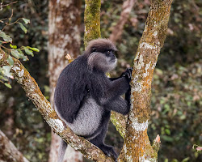
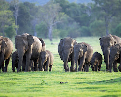
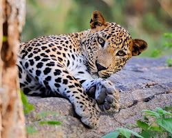

1. Horton Plains National Park
Location: Central highlands, Nuwara Eliya district
Immerse yourself in a mystical world of misty mountains, rolling grasslands, and crystal-clear waterfalls. Hike through the enchanting Baker's Falls trail, or witness the captivating sunrise over World's End, a sheer 1,270m precipice. Keep an eye out for sambar deer, elusive toque macaques, and the endemic purple-faced langur monkeys.
2. Minneriya National Park
Location: North Central province, Polonnaruwa district
Witness the awe-inspiring "Gathering," where hundreds of Asian elephants congregate around the Minneriya reservoir during the dry season (June-October). Explore ancient ruins and lush forests, spotting sloth bears, leopard tortoises, and over 170 bird species.
3. Udawalawe National Park
Location: Sabaragamuwa province, Ratnapura district
Embark on a safari through pristine grasslands and witness the largest recorded wild elephant population in Sri Lanka. Observe herds grazing around the serene Udawalawe Reservoir, and keep an eye out for spotted deer, water buffaloes, and the majestic peacock.
| Location | Animal | Interesting Facts | Image |
|---|---|---|---|
| Horton Plains | Purple-faced Langur | Endemic to Sri Lanka, these monkeys have distinctive purple skin around their faces. |  |
| Minneriya | Asian Elephant | These gentle giants possess excellent memory and communicate through infrasound. |  |
| Udawalawe | Sri Lankan Leopard | TAdaptable climbers and nocturnal hunters, leopards have rosettes that are unique to each individual. |  |